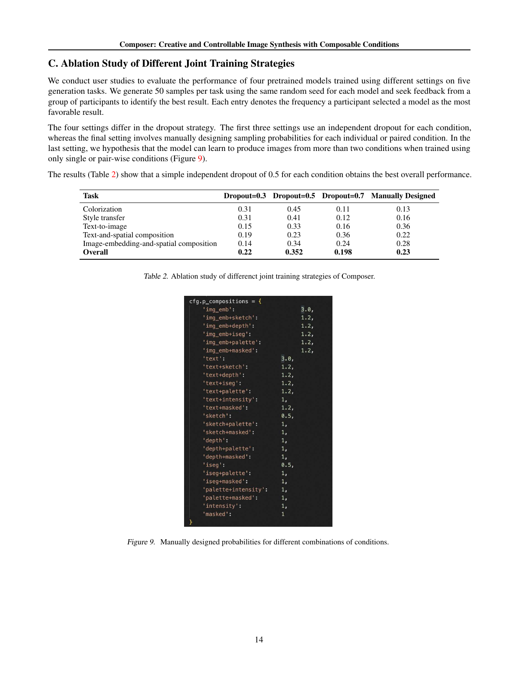

一句话结论
Composer证明八类条件可以接入同一扩散系统、重写多种生成与编辑任务；但随机条件丢弃的总体偏好优势不等于每任务最优，也不足以证明严格训练外组合泛化。[2]
问题定义
文本往往不能同时准确指定形状、布局、颜色与身份。Composer先把图像分解成可独立选择的条件，再用统一生成器重组；问题从“多一个控制器”变成条件暴露、条件冲突和任务取舍。[2]
方法概述
- 底座：GLIDE式U-Net在64×64像素空间生成，再用两级扩散超分至256和1024；不是DiT，也不是VAE潜空间Stable Diffusion。附录中另一个Latent-Composer工程计划不能当作此论文实现。[2][5]
- 八类条件：caption、CLIP图像嵌入、CIELab色彩直方图、sketch、实例分割、depth、灰度intensity、masked RGB+mask；依赖CLIP、YOLOv5和深度估计器等外部提取。[2]
- 注入：全局条件进入timestep embedding和cross-attention；局部条件卷积投影后求和，与噪声图拼接。两个条件集合之间的CFG差分调节强调方向；真实图重配置另用DDIM inversion。[2]
- 训练：逐条件dropout默认0.5，intensity为0.7，另设全丢/全保留概率各0.1。缺明确操作顺序；不能据这些数字推定完整训练组合分布。[2]
核心实验与结果
| 证据 | 正式全文结果 | 不能推出什么 |
|---|---|---|
| COCO文生图，§3.5 | FID 9.2、CLIP 0.28；prior/base/首级超分100/50/20步 | 不能证明布局、颜色、身份或冲突遵循；split、样本量和CI未交代 |
| Table2四策略偏好 | Overall依次0.220/0.352/0.198/0.230，对应dropout0.3/0.5/0.7/人工设计 | 0.352是四选一偏好频率，不是准确率或两模型胜率 |
| 逐任务反例 | 文生图人工设计0.36高于0.5策略0.33；文本+空间0.7策略0.36高于0.5策略0.23 | 总体最佳并非所有任务最佳，缺CI不能宣称显著差异 |
| 组合外推消融 | 附录C人工策略仅用单/双条件训练，试图处理更多条件 | 未给严格held-out清单、组合阶数分组或来源独立评测 |
以上均来自正式PDF §3.5与附录C；人评每任务50样本、各模型相同seed，未写参与人数、盲法、agreement或置信区间。[2]

图为官方PDF第14页。Fig9权重中存在3.0和1.2，不能直接解读为归一化概率。正文确有单/双条件训练的外推尝试，因此批评应是“缺严格组合评测”，而不是“完全没有考虑组合外推”。[2]
数据、成本与公平比较
约1B训练图来自ImageNet21K、WebVision与过滤LAION；base先1M steps预训练再在60M子集做200K联合微调。模型为2B base、1.1B/300M两级超分、1B可选prior。按论文名义参数和batch/steps计算，四模块合计4.4B参数、约63.488亿次训练样本呈现；不是63.488亿独立图像，也不是算力测量。[2]
未报告GPU-hours、端到端延迟、峰值显存、提取器或人评成本。Table1给末级超分10步；编辑需额外inversion，不能只看base步数。作者过滤重复不等于证明COCO测试去重；CLIP输入与CLIP score同源，污染和评价耦合仍需审计。[2]
局限或疑问
- 条件压制：文本常输给图像嵌入、sketch或depth；缺global embedding时图像偏暗。冲突并没有用户优先级保证。[2]
- 任务取舍：上色可能只改背景/光照，风格与语义纠缠，部分风格任务早停优于最终checkpoint，试穿仅moderate。[2]
- 证据不足：主要消融集中于dropout，缺同数据/预算专用模型、逐条件移除和提取器消融；精选多条件图不是严格泛化统计。[2]
- 局部保持不是数学保证：mask条件化样例不足以证明编辑区外像素完全不变，应检查区域误差或显式合成机制。[2]
- 可复现性：官方README快照仍把代码、权重、Gradio列TODO；5B宣传口径与论文分模块计数不同。旧项目URL返回404，已从官方仓库确认迁移后地址。不声称模型已复现。[5]
对当前Wiki判断的影响
topics/image-generation应把统一控制拆成“接口可组合、训练暴露、冲突仲裁、遵循评测、逐任务退化”，而不是按条件数量判断成熟度。questions/question-will-unified-image-models-sustain-their-advantage继续开放：需固定底座和数据，对照随机dropout、单/双条件训练和专用控制器，按seen/unseen组合阶数给出人评区间与成本。此为综合建议，未执行新模型实验。
原始链接与材料
- 正式论文页；官方21页PDF（内含附录）。[1][2]
- 官方仓库；迁移后项目页。[5]
- arXiv版本历史：v1 2023-02-20，v2 2023-02-22；正式论文DOI未见于PMLR记录，不以arXiv DOI替代。[1][3]
- 本地原始PDF、HTML、全文、README、独立analysis.md保存在raw_entry；正文结论以官方PDF为主。
Sources
[1] https://proceedings.mlr.press/v202/huang23b.html
[2] https://proceedings.mlr.press/v202/huang23b/huang23b.pdf
[3] https://arxiv.org/abs/2302.09778
[5] https://github.com/ali-vilab/composer